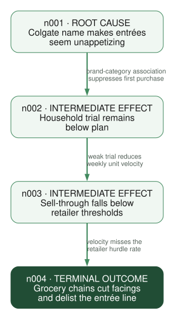

Structured Pre-mortem Failure Analysis
From a vivid imagined failure through stakeholder perspectives and causal pathways to concrete mitigations, research questions, and a decision-ready report.
01 What Premortem is for
Premortem is a command-line tool for pressure-testing a concrete initiative before the team commits to it. It is useful for launches, policies, programs, investments, migrations, and other plans where failure would be costly and different stakeholders see different parts of the risk.
The method starts with a thought experiment: assume the initiative has already failed. Looking backward from that imagined outcome makes it easier to name concerns that ordinary planning meetings suppress, especially concerns that cross organizational boundaries or challenge an optimistic consensus.
The package turns that discussion into a repeatable analysis. It stores the failure definition, stakeholder perspectives, failure stories, causal graph, risk scores, mitigations, research questions, and final report as one project. The command-line interface preserves the reasoning trail and makes it possible to stop for review between phases.
What the process produces
- A precise description of what definitive failure would look like.
- Stakeholder-specific accounts of how that failure happened.
- A compact causal graph showing root causes, intermediate effects, and terminal outcomes.
- Prioritized interventions tied to specific points in the graph.
- A research agenda for assumptions that should be tested before a go/no-go decision.
- A report that communicates the recommendation and its evidence.
When to use it
Use Premortem when there is a real plan to evaluate, when failure has meaningful consequences, and when stakeholder perspectives or causal analysis can improve the decision. If the team has not selected a plan yet, compare alternatives first. If all you need is a quick list of obvious risks, the full workflow is probably more structure than you need.
How the workflow proceeds
- Imagine: describe definitive failure as a completed fact, including visible consequences.
- Diversify: use stakeholder lenses with different incentives, information, and exposure.
- Explain: organize their failure stories into a compact causal graph.
- Intervene: target dangerous pathways with mitigations and decision-relevant research.
The workflow alternates generation, analyst synthesis, and explicit review. It does not predict one inevitable future. It identifies plausible mechanisms early enough to prevent them or test the assumptions behind them.
Technical reference: JSON output
Every command emits one JSON document by default. Automation should branch on the boolean ok, read successful results from data, and use next_actions to discover executable follow-up commands. The command array records the Premortem subcommand. Each action declares whether it mutates state, requires network access, or needs user approval.
{
"schema_version": "1.0",
"ok": true,
"command": ["status"],
"data": {
"initiative": "Colgate Kitchen entrée launch",
"phase": "personas",
"personas": 0,
"graph_nodes": 0,
"mitigations": 0
},
"warnings": [],
"next_actions": []
}Failures use the same outer contract, replace data with a structured error, and return a nonzero process status:
{
"schema_version": "1.0",
"ok": false,
"command": ["docs", "show", "missing"],
"error": {
"code": "ID_NOT_FOUND",
"message": "Documentation topic not found.",
"details": {
"context": "missing",
"hint": "Run `premortem docs list`."
}
},
"warnings": [],
"next_actions": []
}Human output is explicit. Add --human when reading interactively. JSON remains the stable default for agents, scripts, and tests.
Examples are abbreviated. The tutorial keeps the complete envelope fields but may omit timestamps, notes, saved-object metadata, or additional collection members inside data. The CLI output remains the source of truth.
Technical reference: EDSL execution
Premortem packages the research design; EDSL executes it. These four commands form the boundary for every AI-assisted phase.
1. Build the Jobs package
Creates a portable EDSL Jobs object without selecting or calling a model.
- personas
- The phase to package.
- --context
- The facilitator perspective used to design stakeholder personas.
- --requirements
- Comma-separated stakeholder roles that must be represented.
- --output
- Destination for the model-free
.jobs.epartifact.
premortem job generate personas --context "Consumer packaged-goods launch strategist" --requirements "brand director,grocery category buyer,food safety lead,co-manufacturer operator,time-pressed parent" --output jobs/personas.jobs.ep{"schema_version":"1.0","ok":true,"command":["job","generate","personas"],"data":{"object_type":"Jobs","phase":"personas","output_path":"jobs/personas.jobs.ep","expected_results_path":"jobs/personas-results.ep","question_names":["personas"],"agent_count":1,"scenario_count":1,"model_count":0},"warnings":[],"next_actions":[{"kind":"command","label":"Run `ep inspect jobs/personas.jobs.ep`","command":["ep","inspect","jobs/personas.jobs.ep"],"mutates_state":false,"requires_network":false,"requires_user_approval":false}]}2. Inspect the package
Shows the object type and execution dimensions before any paid inference.
- jobs/personas.jobs.ep
- The Jobs artifact to inspect.
ep inspect jobs/personas.jobs.ep{"status":"ok","data":{"object_type":"Jobs","length":1,"question_count":1,"question_names":["personas"],"agent_count":1,"scenario_count":1,"model_count":0},"warnings":[]}3. Estimate the run cost
Asks Expected Parrot for the credit hold and approximate dollar cost.
- jobs/personas.jobs.ep
- The Jobs artifact whose execution cost should be estimated.
ep jobs cost jobs/personas.jobs.ep{"status":"ok","data":{"credits_hold":0.16,"usd":0.0016},"warnings":[]}4. Run the job
Executes the packaged interviews. This is the paid, networked step and the model is chosen explicitly here.
- jobs/personas.jobs.ep
- The input Jobs package.
- --model
- The EDSL model name to use for every interview.
- --output
- Destination for the portable Results artifact.
ep run jobs/personas.jobs.ep --model gpt-5-nano --output jobs/personas-results.ep{"status":"ok","data":{"meta":{"model_count":1,"agent_count":1,"scenario_count":1,"result_count":1,"saved":{"path":"jobs/personas-results.ep","format":"ep","object_type":"Results"}}},"warnings":[]}5. Ingest the results
Validates and normalizes the EDSL Results into Premortem’s project store.
- personas
- The result type and destination collection.
- --from
- The Results
.epartifact produced byep run.
premortem ingest personas --from jobs/personas-results.ep{"schema_version":"1.0","ok":true,"command":["ingest","personas"],"data":{"created":5,"personas":[{"id":"p001","name":"Maya Chen","role":"Colgate brand director"}]},"warnings":[],"next_actions":[]}Preserve both artifacts. The *.jobs.ep file records what was asked and of whom. The *-results.ep file records the returned answers and model provenance. Premortem state is updated only by the explicit ingest command.
02 Define failure
Begin with the initiative, its context, and the outcomes that must be avoided. Then state failure in the past tense as though the team is looking back from the future.
| A strong statement | A weak statement |
|---|---|
| Names a date or horizon. | Uses an indefinite “someday.” |
| Describes observable consequences. | Says only that the project “did not go well.” |
| Leaves causes for the analysis. | Embeds a favored causal explanation. |
| Avoids hedging. | Uses “might,” “could,” or “possibly.” |
The maintained example is fictional: Colgate launches “Colgate Kitchen,” a line of refrigerated heat-and-serve entrées led by family-size lasagna.
Failure statement. “It is twelve months after the nationwide launch. Major grocery chains have removed Colgate Kitchen lasagna and the rest of the entrée line, retail sell-through missed plan by 70%, $45 million of inventory and launch spending has been written off, and favorability toward the core Colgate brand has fallen 12 points.” The statement is vivid and measurable without claiming why it happened.
init creates the project store. --initiative names the decision; --failure supplies the approved completed-fact outcome. Optional --description adds operating context and --project-dir overrides .premortem/.
premortem init --initiative "Colgate Kitchen entrée launch" \
--failure "It is twelve months after launch. Major grocery chains have removed the line, sell-through missed plan by 70%, $45 million has been written off, and core-brand favorability fell 12 points."{
"schema_version": "1.0",
"ok": true,
"command": ["init", "--initiative", "Colgate Kitchen entrée launch", "--failure", "It is twelve months after launch..."],
"data": {
"id": "pm_2026_0723120000",
"initiative": "Colgate Kitchen entrée launch",
"failure_statement": "It is twelve months after launch...",
"description": null
},
"warnings": [],
"next_actions": [{
"kind": "command",
"label": "Run `premortem persona add`",
"command": ["premortem", "persona", "add"],
"mutates_state": true,
"requires_network": false,
"requires_user_approval": false
}]
}Approval checkpoint. Show the complete failure statement to the decision owner and get explicit approval before initializing the project.
03 Stakeholder personas
Create four to six perspectives whose incentives, access to information, and exposure to consequences differ. Useful roles often include the builder, buyer or user, operator, skeptic, and decision owner.
Personas are analytic lenses, not decorative biographies. Each one should reveal failure mechanisms that another role may miss.
persona add stores one manually authored lens. --name is its stable display name; --role states the institutional position; optional --perspective records incentives and information access.
premortem persona add --name grocery_buyer --role "Frozen-food category buyer"{"schema_version":"1.0","ok":true,"command":["persona","add"],"data":{"id":"p001","name":"grocery_buyer","role":"Frozen-food category buyer","perspective":null},"warnings":[],"next_actions":[]}persona list takes no required arguments and returns every stored persona. Add --human for a Rich table.
premortem persona list{
"schema_version": "1.0",
"ok": true,
"command": ["persona", "list"],
"data": [{
"id": "p001",
"name": "grocery_buyer",
"role": "Frozen-food category buyer",
"perspective": null
}],
"warnings": [],
"next_actions": []
}Approval checkpoint. Review the persona set before generating reasons. Replace generic or redundant roles and check that consequential outsiders are represented.
04 Failure reasons
Ask each persona to explain how the failure unfolded. Collect both episodic event chains and structural conditions. Concrete mechanisms are more useful than abstract risk labels.
| Generic label | Operational mechanism |
|---|---|
| Brand mismatch | Shoppers recognize Colgate immediately but report that an oral-care name makes the lasagna seem unappetizing. |
| Retailer resistance | Category buyers give the line one introductory facing and delist it after eight weeks below the required unit velocity. |
| Operations problems | The co-manufacturer misses sauce-fill tolerances at national volume, increasing rework and cold-chain dwell time. |
job generate reasons packages two questions—episodic chains and structural factors—for every stored persona. --domain supplies concrete systems and constraints; --good-example calibrates specificity; --output names the Jobs artifact.
premortem job generate reasons \
--domain "Colgate brand associations, refrigerated entrée buying, grocery shelf velocity, co-manufacturing, food safety, cold-chain logistics" \
--good-example "Shoppers notice the Colgate name but associate it with toothpaste, so fewer households try the lasagna and weekly unit velocity falls below retailer hurdle rates." \
--output jobs/reasons.jobs.ep{"schema_version":"1.0","ok":true,"command":["job","generate","reasons"],"data":{"object_type":"Jobs","phase":"reasons","output_path":"jobs/reasons.jobs.ep","expected_results_path":"jobs/reasons-results.ep","question_names":["episodic_reasons","structural_reasons"],"agent_count":5,"scenario_count":1,"model_count":0},"warnings":[],"next_actions":[{"kind":"command","label":"Run `ep inspect jobs/reasons.jobs.ep`","command":["ep","inspect","jobs/reasons.jobs.ep"],"mutates_state":false,"requires_network":false,"requires_user_approval":false}]}If the output reads like a generic risk register, regenerate with stronger domain context and one example at the desired level of specificity.
05 Causal graph
Synthesize the reasons into a small directed graph: roughly three or four root causes, two or three intermediate effects, and one or two terminal outcomes. Edges should name causal mechanisms, not merely imply sequence.
- Root causes
- No incoming edges. These upstream conditions create or amplify a pathway.
- Intermediate effects
- Places where causes combine, feedback develops, or symptoms propagate.
- Terminal outcomes
- No outgoing edges. These connect directly to the approved failure statement.
- Convergence points
- Nodes reached by multiple pathways and often useful as intervention targets.

A Graphviz rendering of maintained DOT source, using the same causal model emitted by premortem graph export. A full graph should also include operational, food-safety, pricing, and supply-chain branches where the evidence supports them.
graph add-node stores one causal factor. --label states the mechanism; repeat --reason to attach the evidence records that support it.
premortem graph add-node --label "Colgate name makes entrées seem unappetizing" --reason r001{"schema_version":"1.0","ok":true,"command":["graph","add-node"],"data":{"id":"n001","label":"Colgate name makes entrées seem unappetizing","reason_ids":["r001"]},"warnings":[],"next_actions":[]}Run the same command for the downstream effect. Here --label names the effect and --reason r002 links its supporting reason.
premortem graph add-node --label "Household trial remains below plan" --reason r002{"schema_version":"1.0","ok":true,"command":["graph","add-node"],"data":{"id":"n002","label":"Household trial remains below plan","reason_ids":["r002"]},"warnings":[],"next_actions":[]}graph add-edge records direction and mechanism. --from is the cause node; --to is the effect node; --label explains how the cause produces the effect.
premortem graph add-edge --from n001 --to n002 --label "brand-category association suppresses first purchase"{"schema_version":"1.0","ok":true,"command":["graph","add-edge"],"data":{"id":"e001","source":"n001","target":"n002","label":"brand-category association suppresses first purchase"},"warnings":[],"next_actions":[]}graph list takes no required arguments and returns the complete node and edge collections.
premortem graph list{
"schema_version": "1.0",
"ok": true,
"command": ["graph", "list"],
"data": {
"nodes": [
{"id": "n001", "label": "Colgate name makes entrées seem unappetizing", "reason_ids": ["r001"]},
{"id": "n002", "label": "Household trial remains below plan", "reason_ids": ["r002"]}
],
"edges": [
{"id": "e001", "source": "n001", "target": "n002", "label": "brand-category association suppresses first purchase"}
]
},
"warnings": [],
"next_actions": []
}Approval checkpoint. The graph is analyst work. Review it for missing mechanisms, overloaded nodes, and ambiguous edges before moving to mitigation.
06 Scoring risks
Score important graph nodes to direct attention, not to manufacture false precision. Likelihood describes how plausible the node is; impact describes how strongly it contributes to definitive failure. Use notes to preserve the evidence and reasoning behind both judgments.
| Dimension | Question |
|---|---|
| Likelihood | How plausible is this node under the planned initiative? |
| Impact | If this node occurs, how much does it contribute to definitive failure? |
| Notes | What observations, records, assumptions, or precedents support the ratings? |
score set upserts one node score. --node identifies the graph node; --likelihood and --impact accept low, medium, or high; optional --notes records the basis.
premortem score set --node n001 --likelihood high --impact high{"schema_version":"1.0","ok":true,"command":["score","set"],"data":{"node_id":"n001","likelihood":"high","impact":"high","notes":null},"warnings":[],"next_actions":[]}07 Mitigations
Every mitigation should name the graph node it targets and specify who does what by when. Separate prevention, early detection, and response; they intervene at different points in the pathway.
Concrete form. “Before national production authorization, the consumer-insights director will run a 600-person randomized concept test comparing identical lasagna under the Colgate name and a standalone food brand.”
job generate mitigations packages one interview per persona. --good-example demonstrates an owned, timed intervention; --output names the Jobs artifact. Optional --bad-example identifies language to reject.
premortem job generate mitigations \
--good-example "Before national production authorization, consumer insights runs a 600-person branded-versus-blind concept test and stops the Colgate-branded launch if purchase intent is eight points lower." \
--output jobs/mitigations.jobs.ep{"schema_version":"1.0","ok":true,"command":["job","generate","mitigations"],"data":{"object_type":"Jobs","phase":"mitigations","output_path":"jobs/mitigations.jobs.ep","expected_results_path":"jobs/mitigations-results.ep","question_names":["mitigations"],"agent_count":5,"scenario_count":1,"model_count":0},"warnings":[],"next_actions":[{"kind":"command","label":"Run `ep inspect jobs/mitigations.jobs.ep`","command":["ep","inspect","jobs/mitigations.jobs.ep"],"mutates_state":false,"requires_network":false,"requires_user_approval":false}]}The EDSL question returns a structured record with action, owner, timing, node_ids, and mechanism. After the approved ep run, ingest that Results artifact:
premortem ingest mitigations --from jobs/mitigations-results.ep{"schema_version":"1.0","ok":true,"command":["ingest","mitigations"],"data":{"created":5,"mitigations":[{"id":"m001","text":"Run a branded-versus-blind concept test before production authorization.","node_ids":["n001"],"notes":"Owner: Consumer insights director\nTiming: Before production authorization\nMechanism: Tests whether parent-brand association suppresses trial"}]},"warnings":[],"next_actions":[]}A mitigation with no graph target is probably too broad. Map it to a mechanism or treat it as a weak recommendation requiring revision.
08 Research agenda
Not every uncertainty should become an action item. Research is valuable when an assumption is important, uncertain, and testable before the decision. A useful research question identifies the evidence that would update the recommendation.
job generate research-agenda packages unresolved graph assumptions for every persona. --output chooses the Jobs artifact path; project state supplies the personas, reasons, and graph.
premortem job generate research-agenda --output jobs/research-agenda.jobs.ep{"schema_version":"1.0","ok":true,"command":["job","generate","research-agenda"],"data":{"object_type":"Jobs","phase":"research_agenda","output_path":"jobs/research-agenda.jobs.ep","expected_results_path":"jobs/research-agenda-results.ep","question_names":["research_agenda"],"agent_count":5,"scenario_count":1,"model_count":0},"warnings":[],"next_actions":[{"kind":"command","label":"Run `ep inspect jobs/research-agenda.jobs.ep`","command":["ep","inspect","jobs/research-agenda.jobs.ep"],"mutates_state":false,"requires_network":false,"requires_user_approval":false}]}Each returned research record has six explicit fields: assumption, uncertainty, method, population, decision_threshold, and node_ids. This makes the result usable by a reporting agent without parsing prose.
premortem ingest research-agenda --from jobs/research-agenda-results.ep{"schema_version":"1.0","ok":true,"command":["ingest","research-agenda"],"data":{"rows":5,"output_path":".premortem/output/results_research_agenda.json","source_results":"jobs/research-agenda-results.ep"},"warnings":[],"next_actions":[{"kind":"command","label":"Run `premortem report context`","command":["premortem","report","context"],"mutates_state":true,"requires_network":false,"requires_user_approval":false}]}| Question | Decision relevance | Evidence |
|---|---|---|
| How much does the Colgate name change purchase intent? | Determines whether the line can use the parent brand. | Randomized branded-versus-blind concept test with category buyers. |
| What velocity do grocery buyers require after launch? | Determines the trial volume needed to retain shelf space. | Interviews and historical reset data from target retail chains. |
09 Reporting
Premortem prepares the analysis; a downstream writing agent writes the audience-specific report. The canonical handoff is a structured JSON bundle containing source evidence, causal paths, risk rankings, mitigation coverage, research material, provenance, and explicit writing instructions.
Before exporting, run premortem workflow validate. It checks cross-entity references, duplicate edges, self-loops, and causal cycles. Errors should be repaired; warnings identify coverage gaps such as unscored or unmitigated nodes.
premortem workflow validate{"schema_version":"1.0","ok":true,"command":["workflow","validate"],"data":{"valid":true,"errors":[],"warnings":[{"severity":"warning","code":"unmitigated_nodes","message":"Nodes without mitigations: n006.","entity_ids":["n006"]}]},"warnings":[],"next_actions":[]}report context writes that bundle. With no --output, it uses .premortem/output/report-context.json. Pass a different path when another agent or reporting system expects the artifact elsewhere.
premortem report context{
"schema_version": "1.0",
"ok": true,
"command": ["report", "context"],
"data": {
"object_type": "premortem_report_context",
"output_path": ".premortem/output/report-context.json",
"counts": {
"personas": 5,
"reasons": 10,
"nodes": 8,
"edges": 10,
"mitigations": 12,
"research_items": 5
},
"reporting_brief": {
"purpose": "Write a decision-ready report from this structured pre-mortem record.",
"required_sections": ["decision and recommendation", "principal causal pathways", "mitigations and owners", "research required before commitment", "limitations"]
}
},
"warnings": [],
"next_actions": []
}Give the resulting JSON file to a writing agent together with the intended audience, tone, format, and decision context. An ingested executive summary can appear in the bundle as optional source material, but it is not required and should not dictate the final prose.
premortem report html remains available when a quick deterministic HTML rendering is useful. It is a convenience output, not the canonical reporting workflow.
10 Canonical command sequence
Follow the numbered chapters in order. For each AI phase, repeat the five-command lifecycle shown in EDSL Jobs workflow: build, inspect, estimate, run, and ingest. Each command above is isolated with its arguments and output so it can be copied and verified independently.
- Initialize after approving the failure statement.
- Build, run, ingest, and review personas.
- Build, run, ingest, and review failure reasons.
- Synthesize nodes and edges manually; then score important nodes.
- Build, run, and ingest mitigations.
- Build, run, and ingest the research agenda.
- Validate project integrity, repair errors, and review coverage warnings.
- Export report context and give it to a writing agent with audience requirements.
Use the CLI as the source of truth. Project state lives in .premortem/. Do not edit its JSON files directly; use commands so validation and workflow state remain consistent.
Agent guidance and handoff
Premortem is designed to teach an agent the method as it works. The package includes phase-specific documentation, quality checklists, approval rules, current-state inference, and executable next actions. The agent should not memorize the full workflow or infer state from filenames.
Start or resume
agent-start returns the facilitation contract, current phase, full agent guide, and executable next_actions. --project-dir is optional when state is not stored in the default .premortem/ directory.
premortem agent-start{"schema_version":"1.0","ok":true,"command":["agent-start"],"data":{"role":"Facilitate the premortem; do not expect the user to know the method.","rules":["Use the CLI as the source of truth; do not edit .premortem JSON directly.","Read the phase guide before acting.","Stop for approval at required checkpoints."],"state":{"phase":"intake","project_exists":false}},"warnings":[],"next_actions":[{"kind":"command","label":"Run `premortem docs show facilitation-guide`","command":["premortem","docs","show","facilitation-guide"],"mutates_state":false,"requires_network":false,"requires_user_approval":false}]}Ask the package what comes next
workflow next infers the phase from stored artifacts. It returns the phase checklist, recommended steps, and executable actions. Run it after initialization, ingestion, graph changes, or whenever resuming work.
premortem workflow next{"schema_version":"1.0","ok":true,"command":["workflow","next"],"data":{"phase":"personas","counts":{"personas":0},"validation":{"valid":true,"errors":[],"warnings":[]},"checklist":["Build a model-free personas.jobs.ep package.","Review 4-6 personas for specificity and conflicting incentives."],"recommended_next_steps":[{"kind":"command","label":"Build personas Jobs","command":"premortem job generate personas --context \"...\" --requirements \"...\" --output jobs/personas.jobs.ep"}]},"warnings":[],"next_actions":[{"kind":"command","label":"Run `premortem job generate personas --context \"...\" --requirements \"...\" --output jobs/personas.jobs.ep`","command":["premortem","job","generate","personas","--context","...","--requirements","...","--output","jobs/personas.jobs.ep"],"mutates_state":true,"requires_network":false,"requires_user_approval":false}]}Load phase-specific technique
workflow guide combines the relevant packaged document with its quality checklist. The positional argument names the phase, such as personas, reasons, causal-graph, mitigations, or research-agenda.
premortem workflow guide causal-graph{"schema_version":"1.0","ok":true,"command":["workflow","guide"],"data":{"phase":"causal-graph","doc_topic":"causal-graph","markdown":"# Causal Graph\n...","checklist":["Read failure reasons and synthesize about 8 causal nodes.","Add about 10 directed edges with concise mechanism labels."]},"warnings":[],"next_actions":[]}Copy this into a fresh Codex or Claude Code session
The following bootstrap prompt gives a new coding agent enough information to install the package, discover its role, and continue by following state-aware guidance.
Install the current Premortem and EDSL main branches. If uv is not installed,
first run `python -m pip install --upgrade uv`, then run:
uv tool install --upgrade --force \
--with-executables-from "edsl @ git+https://github.com/expectedparrot/edsl.git@main" \
"premortem @ git+https://github.com/expectedparrot/premortem.git@main"
Verify that `premortem` and `ep` resolve from the directory reported by
`uv tool dir --bin`:
uv tool dir --bin
command -v premortem
command -v ep
premortem --help
ep --help
If necessary, run `uv tool update-shell` and verify again.
Run `ep auth status`. If authentication is missing, run `ep auth login` and
follow its login flow. Let the EDSL CLI create and manage the repository-local
`.env`; never display, copy, or commit API keys. Then run
`ep profiles current` to inspect the redacted configuration and `ep check` to
verify connectivity.
You are facilitating a structured pre-mortem with me. Do not expect me to know
the method and do not edit .premortem JSON files directly.
1. Run `premortem agent-start` and follow its facilitation rules.
2. Run `premortem workflow next` to determine the current phase and surface the
executable next actions.
3. Before each phase, run `premortem workflow guide <phase>` and apply its
checklist and quality standards.
4. Draft the failure statement yourself from my context, then stop for approval.
Also stop after personas, after the causal graph, and before paid model runs.
5. For AI-assisted phases, build a model-free `.jobs.ep` package, inspect it,
estimate its cost, ask me to approve the model run, execute it with `ep run`,
and ingest the resulting `.ep` file.
6. After every ingest or material state change, run `premortem workflow next`
again. Before report handoff, run `premortem workflow validate` and repair
any errors.
7. Export `.premortem/output/report-context.json` with
`premortem report context`; give that evidence bundle and the audience
requirements to a writing agent. Direct HTML is only a convenience output.
8. Before handing off, run `premortem agent-end` and lead with the recommendation,
research homework, and canonical report path.
Start by running `premortem agent-start`. If no project exists, ask me for the
initiative and relevant context, then draft the failure statement for approval.